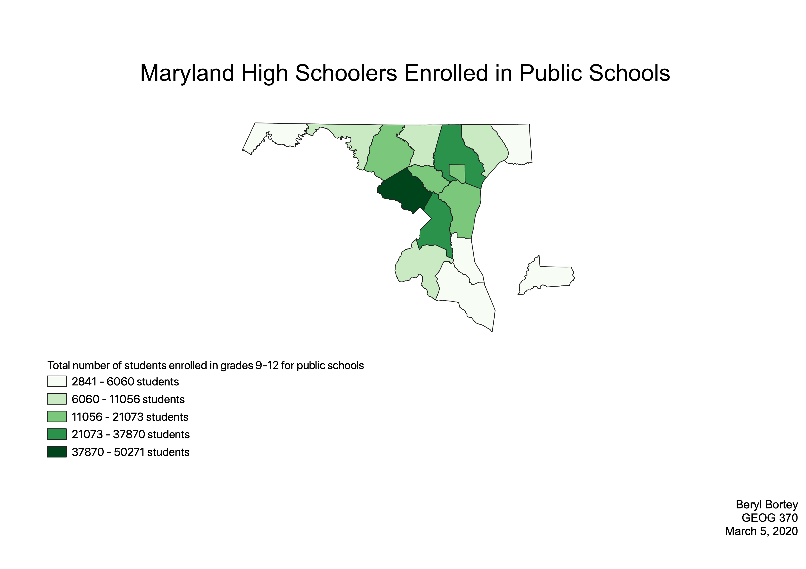

Homework 7: Census Data Choropleth
Beryl Bortey
This map of Maryland depicts the number of students enrolled in grades 9-12 at public schools. The map reflects how many of these students are in each county. For example, the county with the darkest gradient has between 37,870 and 50,271 high school students enrolled at public schools.

Data used for this project
CSV Dataset
Link to Vector